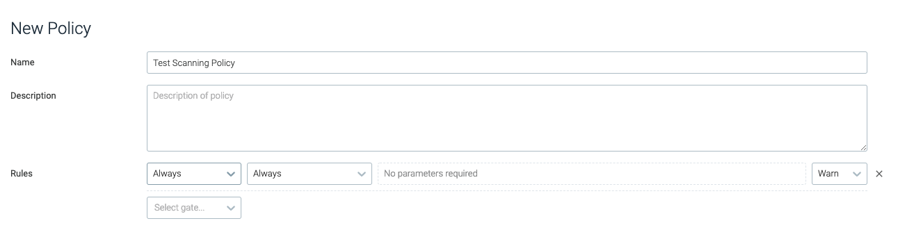
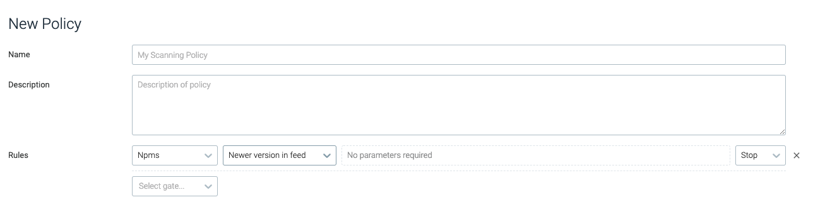
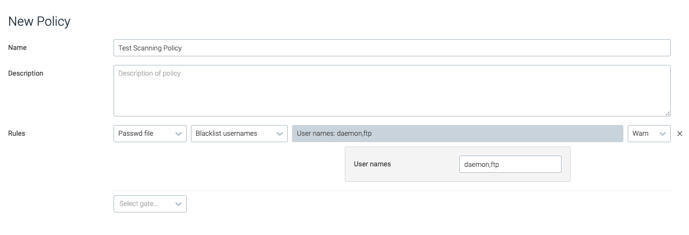
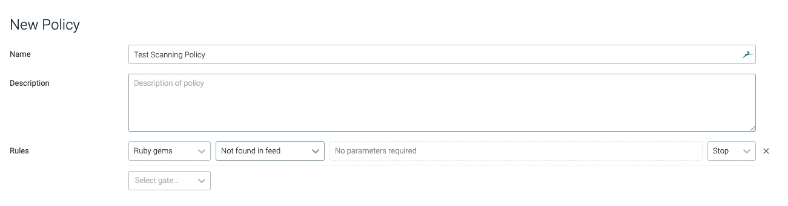
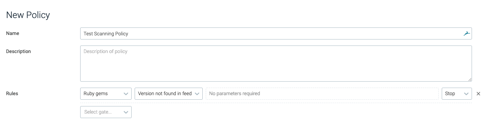

Scanning Policy Gates and Triggers
This document describes the gates (and their respective triggers / parameters) that are supported within Sysdig Secure policy bundles. Use these policy gates, triggers, and parameters to build in-depth scanning policies, from whitelisting / blacklisting partial file names to defining what login shells are approved.
Note
This information can also be obtained using the CLI:
user@host:~$ anchore-cli policy describe (--gate <gatename> (--trigger <triggername))
For more information, see Manage Scanning Policies.
Always
This gate provides users with a valuable testing resource, as it will be triggered unconditionally.
always
The always trigger / gate will trip if it is present in the policy.
Note
The Always gate is useful for testing whether the image blacklist/whitelist is working as expected.
|  |
Dockerfile
The dockerfile gate reviews the contents of a dockerfile, or the assumed contents of a dockerfile if one is not provided, for exposed ports and instructions that do not follow best practices.
Note
The gate assumes what the contents would be based on the docker layer history.
effective_user
This trigger reviews whether the effective user matches the user provided, and will fire based on the configured type.
Parameter | Description | Example |
|---|---|---|
| Determines whether the user should be whitelisted or blacklisted. | N/A |
| The name of the user. | root,docker |
 |
exposed_ports
This trigger evaluates the set of exposed ports to determine whether they should be whitelisted or blacklisted.
Parameter | Description | Example |
|---|---|---|
| Defines whether the evaluation should skip inferred or guessed dockerfiles, and only evaluate user-provided dockerfiles. The default value is | true |
| A comma-separated list of port numbers. | 80,8080,8088 |
| Defines whether the ports should be whitelisted or blacklisted. | N/A |
 |
instruction
This trigger evaluates whether any directives / instructions in the list match the conditions in the dockerfile.
Parameter | Description | Example |
|---|---|---|
| Defines whether the evaluation should skip inferred or guessed dockerfiles, and only evaluate user-provided dockerfiles. The default value is | true |
| The type of check to perform. | = |
| The dockerfile instruction to check. | FROM |
| The value to check the dockerfile instruction against. | scratch |
 |
no_dockerfile_provided
This trigger will trip if there is no dockerfile supplied with the image. No parameters are required for this trigger.
 |
Files
The Files gate reviews files within the analyzed image. This evaluation covers file content, names, and filesystem attributes.
content_regex_match
This trigger is tripped for each file where a match has been found using the configured regex in the analyzer_config.yaml content_search section.
Note
For more information regarding the regex values, refer to the analyzer_config.yaml file.
Parameter | Description | Example |
|---|---|---|
| The regex string that appears in the | .*password.* |
 |
name_match
This trigger is tripped if the name of a file in the container matches the provided regex.
Note
This trigger has a performance impact on policy evaluation.
Parameter | Description | Example |
|---|---|---|
| The regex to search for. | .*\.pem |
 |
suid_or_guid_set
This trigger is tripped for each file that has a set-user identification (SUID) or set-group identification (SGID) configured. No parameters are required.
 |
Licenses
This gate is used to review software licenses found in the container image, to ensure, for example, that packages that violate internal company policy are not being used.
blacklist_exact_match
This trigger will be tripped if the image contains packages distributed under the exact license specified.
Parameter | Description | Example |
|---|---|---|
| A comma-separated list of license names to blacklist. | GPLv2+,GPL-3+,BSD-2-clause |
 |
blacklist_partial_match
This trigger will be tripped if the image contains packages distributed under a license that includes the partial strings provided.
Parameter | Description | Example |
|---|---|---|
| A comma-separated list of strings to blacklist for licenses. | LGPL,BSD |
 |
Metadata
This gate reviews image metadata, including the size, operating system, and architecture.
attribute
The attribute trigger is tripped if a named image metadata value matches the given condition.
Parameter | Description | Example |
|---|---|---|
| The attribute name to check. | size |
| The operation to perform for the evaluation. | > |
| The value used for the evaluation. | 1073741824 |
 |
NPMs
The NPMs gate reviews any images that have NPM packages installed.
blacklisted_name_version
This trigger is tripped if the evaluated image has an NPM package installed that has been blacklisted, either by name or optionally by name and version.
Parameter | Description | Example |
|---|---|---|
| The name of the blacklisted NPM package. | time_diff |
| The specific version of the NPM package to blacklist. | 0.2.9 |
 |
feed_data_unavailable
This trigger is tripped if the engine does not have access to the NPM data feed. No parameters are required.
 |
newer_version_in_feed
This trigger is tripped if the NPM data feed lists a newer version of the package. No parameters are required.
|  |
unknown_in_feeds
This trigger is tripped if the NPM installed is not in the official NPM database. No parameters are required.
 |
version_not_in_feeds
This trigger is tripped if the NPM version is not listed as a valid version in the official NPM feed. No parameters are required.
 |
Packages
The Packages gate reviews all packages within the image, verifying names, versions, and whitelisted / blacklisted packages.
blacklist
This trigger is tripped if the image contains packages that have been blacklisted by either name, or name and version.
Parameter | Description | Example |
|---|---|---|
| The name of blacklisted package/s. | openssh-server |
| The exact version of the package that should be blacklisted. | 1.0.1 |
 |
required_package
The required_package trigger is tripped if the specified package / version is not found in the image.
Parameter | Description | Example |
|---|---|---|
| The name of the required package. | libssl |
| The required package version. | 1.10.3rc3 |
| Defines whether the trigger should require the exact package and version (exact), or just a version of the package (minimum). This is only relevant if the version is defined. | exact |
 |
verify
This trigger reviews the package integrity against the package database in the image, and is tripped for change or removal of content in either all or a defined list of directories provided.
Parameter | Description | Example |
|---|---|---|
| Defines whether the check should focus on missing packages, changed packages, or all. | changed |
| Defines the list of directories the check should be limited to. | /usr,/var/lib |
| Defines the list of packages that should be verified. | libssl,openssl |
 |
Passwd File
This gate reviews /etc/passwd for blacklisted users, groups, and shells.
blacklist_full_entry
This trigger trips if the whole password is found in the /etc/password file.
Parameter | Description | Example |
|---|---|---|
| The full entry to match in | ftp:x:14:50:FTP User:/var/ftp:/sbin/nologin |
 |
blacklist_groupids
This trigger is tripped if the designated group id/s are found in the /etc/passwd file.
Parameter | Description | Example |
|---|---|---|
| A numeric, comma separated list of group ids that will cause the trigger to trip. | 999,20 |
 |
blacklist_shells
This trigger will trip if a designated login shell is found under any user in the /etc/passwd file.
Parameter | Description | Example |
|---|---|---|
| The list of shell commands to blacklist. | /bin/bash,/bin/zsh |
blacklist_userids
This trigger will be tripped if the specified user ID is present in /etc/passwd.
Parameter | Description | Example |
|---|---|---|
| The numerical, comma-separated list of user IDs to blacklist. | 0,1 |
 |
blacklist_usernames
The blacklist_usernames trigger will trip if the specified username is found in the /etc/passwd file.
Parameter | Description | Example |
|---|---|---|
| A comma-separated list of usernames to blacklist. | daemon,ftp |
|  |
content_not_available
The content_not_available trigger will trip if the /etc/passwd file is not present in the image. No parameters are required.
Ruby Gems
The Ruby Gems gate ensures that developers are using official packages from the official GEM database, and are not using versions of packages that are no longer supported.
blacklist
The blacklist trigger trips if a GEM package that matches the configured name and version is found in the evaluated image.
Parameter | Description | Example |
|---|---|---|
| The name of the gem. | time_diff |
| The version of the gem to blacklist. | 0.2.9 |
feed_data_unavailable
This trigger will trip if Sysdig does not have access to the GEM data feed. No parameters are required.
 |
newer_version_found_in_feed
This trigger will trip if an installed GEM package is not the latest version. No parameters are required.
 |
not_found_in_feed
This trigger will trip if an installed GEM is not in the official GEM database. No parameters are required.
|  |
version_not_found_in_feed
This trigger will trip if the GEM is not listed in the official GEM feed as a valid / supported version. No parameters are required.
|  |
Secret Scans
Secret scans determine, based on configured regex, whether secrets that could be available if an image was compromised have been baked into the image.
content_regex_checks
The content_regex_checks trigger trips if the content search analyzer finds a match with the configured and named regexes. Matches are filtered by the content_regex_name, and the filename_regex, if either are set.
Note
The content_regex_name should be a value from the secret_search section of analyzer_config.yaml.
Parameter | Description | Example |
|---|---|---|
| The name of the variable / content. If found in the image, this should trip the trigger. NoteThe names available by default are | AWS_ACCESS_KEY |
| Filters the files that should be analyzed for the presence of the | /etc/.* |
Vulnerabilities
CVE / vulnerability checks can be used to ensure the included packages don't have vulnerabilities above a set level, are older than a designated period, or if data is unavailable.
package
The package trigger is tripped if a vulnerability in an image matches the configured comparison criteria. The table below outlines the available parameters and criteria:
Parameter | Description | Example |
|---|---|---|
| If present, the fix availability for the vulnerability record must match the value of the parameter. | true |
| The specific type of package. | all |
| The vulnerability severity. | high |
| The type of comparison to perform for the security evaluation. | > |
| If true, an available fix for this CVE must not be explicitly marked as "Won't be addressed by the vendor". | true |
 |
stale_feed_data
The stale_feed_data trigger will be tripped if the CVE data is older than the window specified.
Parameter | Description | Example |
|---|---|---|
| Determines how old in days sync data can be before the trigger is tripped. | 10 |
vulnerability_data_unavailable
If no vulnerability data is available, the vulnerability_data_unavailable trigger will trip. No parameters are required for this trigger.
 |